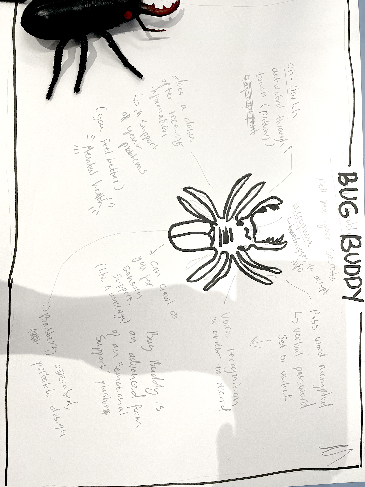
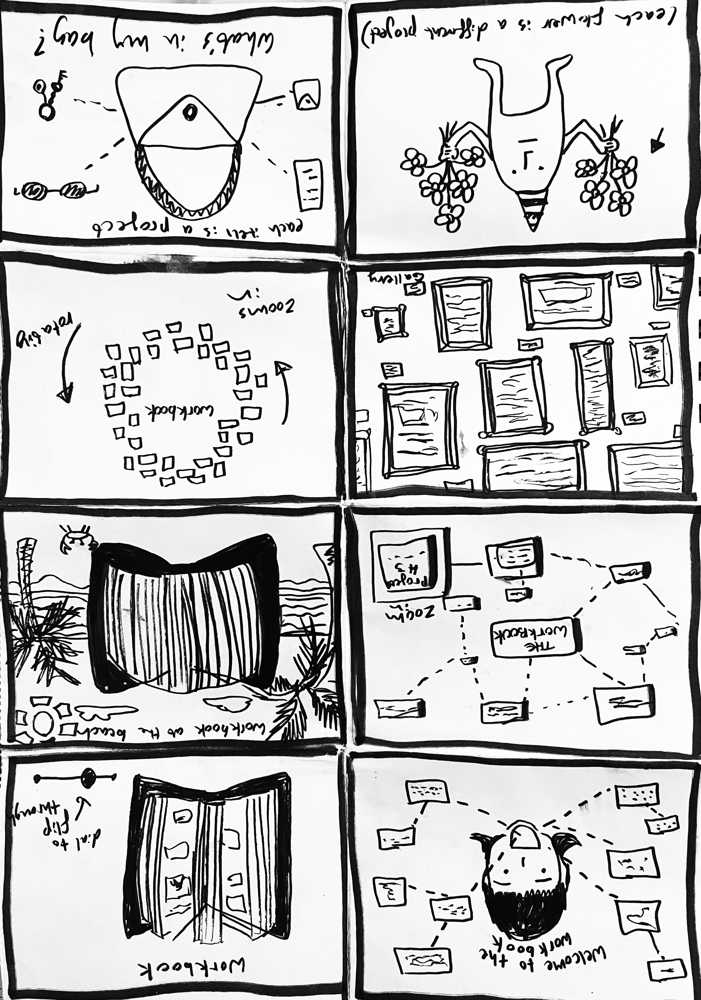

Week 1 Interactivity - Bug Buddy concept
The Bug Buddy is a concept developed in the Week 1 interactivity session, where we created non-existent interfaces based on random objects. The Bug Buddy is an interactive device that contains all your secrets and concerns. First, you must activate the Bug Buddy through fingerprint recognition on its back, followed by stating your verbal password into the microphone at the front of its face. This unlocks your Bug Buddy. You can then proceed to tell it your concerns and fears in complete confidence. Upon hearing your concerns, it will dance to affirm that it has received your message. The Bug Buddy is small enough to fit inside your bag, purse or even pocket, and acts as an emotional support item in times of need.

These notes contain the interfaces and interactive medias featured on Netflix's Blackmirror episode, Plaything.
Week 1 Hunt n Gather - interfaces in media: Blackmirror

Week 2 Interactivity - Crazy 8s
This is the Crazy 8s activity, where each panel represents a potential interface for our Workbook. I gravitated towards the panel on the bottom left (character holding flowers) as it felt unique, funny and captured my creative style in the best way. The character depicted later became the inspiration for the farm-style interface, and inspired the look for the character of “Farmer Gareth”.

This list represents all of the interfaces that I interacted with within a 12 hour timeframe. This includes typical interfaces like my phone and the Myki card readers on trams. However, it also includes using more complex interfaces like a radio broadcasting desk, which I use every week for my student radio show.
Week 2 Hunt n Gather - 12 hour challenge

This is the Long Doge Challenge. It is pretty much a useless website, unless you have hours to kill scrolling through an endless Doge. You can also level up the more you scroll, and even earn "wow" points when you scroll pass a "wow" on the screen. Click on the image to start playing.
Week 2 Hunt n Gather - Website hunting


The prompt for Google's newly created UX/UI AI platform was: Design a website that has the interface of a farm. It will be a nostalgic web-based game, similar to the original Pacman game. Please make the avatars different farm animals, and make the game relatively easy to play.
Week 3 Interactivity - Google Stitch prompting